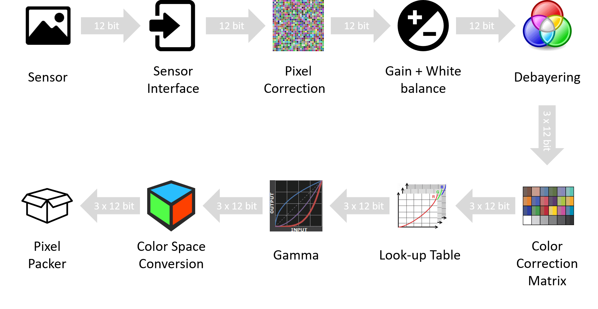
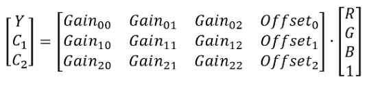
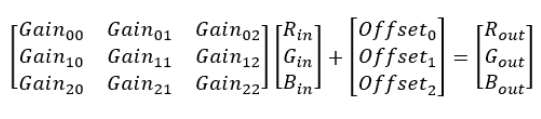

Camera Features¶
Image Processing Controls¶
The TRI054S camera is equipped with the following image processing control flow.
{kind=link}
The details of each of the image processing controls are described below.
Defect Pixel Correction¶
The TRI054S supports a list of pixel coordinates to be corrected via firmware. For the list of pixel coordinates, their actual pixel values are replaced by interpolation of their neighboring pixel values. The camera has a preloaded pixel correction list and these pixels are loaded during the camera manufacturing process. It is natural that sensors come with defective pixels and they are inevitable in the semi-conductor manufacturing process. As the camera operates longer in heat or is exposed to radiation, more defective pixels may appear. Users can update the pixel correction list any time.
Steps to add a new pixel to the correction list
- Set OffsetX and OffsetY to zero. Set Width and Height to the maximum allowed value.
- Set Gain to zero and note the coordinates of any bright pixels in the image. Please ensure the camera is not exposed to light by covering it with a lens cap and placed in a dark box.
- Fire the DefectCorrectionGetNewDefect command.
- Enter the X-coordinate noted in step 2 into DefectCorrectionPositionX.
- Enter the Y-coordinate noted in step 2 into DefectCorrectionPositionY.
- Fire the DefectCorrectionApply command.
- Repeat steps 3-6 as needed and fire the DefectCorrectionSave when done.
| Pixel correction is still applied if the image geometry changes (e.g. applying ReverseX, ReverseY, a region of interest, or binning). | |
The following pseudocode demonstrates adding a defective pixel to the correction list:
1 2 3 4 5 6 7 8 9 10 11 12 13 14 15 16 | // Connect to camera
// Get device node map
// Set maximum width and height
OffsetX = 0;
OffsetY = 0;
Width = Max Width;
Height = Max Height;
// Set constant ExposureTime and Gain
DefectCorrectionGetNewDefect();
DefectCorrectionPositionX = 25; // The X-coordinate of the blemish pixel
DefectCorrectionPositionY = 150; // The Y-coordinate of the blemish pixel
DefectCorrectionApply();
// Repeat the above four steps as needed. When complete:
DefectCorrectionSave();
|
Gain¶
Gain refers to a multiplication factor applied to a signal to increase the strength of that signal. On Lucid cameras, gain can be either manually adjusted or automatically controlled.
Some cameras feature gain that is purely digital while others allow for analog gain control up to a certain value, beyond which the gain becomes digital. Depending on the camera family and sensor model, the specific gain control can vary.
Analog Gain¶
Analog Gain refers to amplification of the sensor signal prior to A/D conversion.
Digital Gain¶
Digital Gain refers to amplification of the signal after digitization.
| Model | Conversion Gain | Analog | Digital |
|---|---|---|---|
| TRI004S | NA | 0-24dB | 24-48dB |
| TRI016S | NA | 0-24dB | 24-48dB |
| TRI023S | NA | 0-24dB | 24-48dB |
| TRI028S | HCG 7.2dB | 0-24dB | 24-48dB |
| TRI032S | NA | 0-24dB | 24-48dB |
| TRI050S | NA | 0-24dB | 24-48dB |
| TRI050S-(P/Q) | NA | 0-24dB | 24-48dB |
| TRI064S | NA | 0-24dB | 24-48dB |
| TRI071S | HCG 7.2dB | 0-24dB | 24-48dB |
| TRI089S | NA | 0-24dB | 24-48dB |
| TRI120S | NA | 0-24dB | 24-48dB |
| TRI122S | NA | 0-27dB | NA |
| TRI200S | NA | 0-27dB | NA |
| TRI02KA | HCG 12dB | NA | 0-24dB |
The following pseudocode demonstrates setting Gain to 12 dB:
1 2 3 4 | // Connect to camera
// Get device node map
GainAuto = Off;
Gain = 12;
|
Conversion Gain Switching¶
Sony’s third generation Pregius sensor line offers a new feature called Conversion Gain Switching. This feature is implemented in IMX428 (TRI071S) and IMX429 (TRI028S) offered in the Triton family. The conversion gain switching feature allow users to select between High Conversion Gain (HCG) for maximum sensitivity and minimum read noise in low light, and Low Conversion Gain (LCG) for greatly increased saturation capacity and higher dynamic range under bright light.

The 2K Line Scan Awaiba sensor also supports conversion gain on sensor before the ADC stage.
| Conversion gain (HCG or LCG) only allows the pixel to be applied once, you will not get the same pixel with both HCG and LCG in two images. | |
Color Processing¶
The TRI054S camera is equipped with a debayering core within the image processing pipeline. The color processing core enables the camera to output a color processed image format in addition to the unprocessed Bayer-tiled image. Currently the camera supports the RGB8 pixel format which outputs 8-bits of data per color channel for a total of 24-bits per pixel. Due to the number of bits per pixel, the total image size for RGB8 would be 3 times larger when compared to an 8-bit image. This increase in image data size per frame would result in a reduction of average frame rate for the camera.
The following pseudocode demonstrates configuring the camera to RGB8 pixel format:
1 2 3 | // Connect to camera
// Get device node map
PixelFormat = PixelFormat_RGB8;
|
White Balance¶
The white balance module aims to change the balance between the Red, Green and Blue channels such that a white object appears white in the acquired images. Lucid Vision Labs cameras allow for manual white balance adjustment by the user, or automatic white balance adjustment based on statistics of previously acquired frames. Different external illuminations and different sensors may render acquired images with color shift. The White Balance module allows the user to correct for the color shift by adjusting gain value of each color channel.
Lucid Vision Labs offers two types of white balance algorithm as described below. Both methods below allow for user controlled anchor points or reference points, from which multipliers are computed for each channel. The different anchor points are summarized below.
| Anchors | Information |
|---|---|
| Min | The lowest luminance channel is used as reference while other channels are adjusted to match it. There is no chance of overflowing the pixels, however the image is darkened. |
| Max | The highest luminance channel is used as reference while other channels are adjusted to match it. There is a chance of overflowing the pixels. |
| Mean | The mean value of all channels is used as reference while all channels are adjusted to match the mean. There is a smaller chance of overflowing. |
| Green | Green channel is used as the reference while the Red and Blue are adjusted. |
Grey World
A grey world assumes that the average of all colors in an image is a neutral grey.
White Patch
White patch has the same idea as Grey World, but only considering a section of the image (i.e. the section being the white patches). A simple way to determine such section(s) of the image is to indicate a pixel as white when R+G+B is greater than the threshold pixel value. Determining the threshold can be done using a 90% percentile of previous image. There is also a need for an additional threshold to exclude saturated pixels for better white balance adjustment.
Look-Up Table (LUT)¶
Look-Up Table also known as LUT is used for mapping 12-bit user-specified pixel values to replace 12-bit raw sensor pixel values. Users input values for the even indices including the last index 4095 while averaging is used to calculate rest of the odd indices. So there are in total 2049 effective input entries; 2048 even (e.g., 0, 2, 4, ..., 4092, 4094) + 1 odd (4095). Index value 0 correspond to black color while the index value 4095 correspond to white color.
To build a LUT, users input index values (e.g., 0, 2, 4, ..., 4092, 4094, 4095) that need to be replaced in the LUTIndex field and the corresponding new value in the LUTValue field. For the odd index values in the gap (e.g., 1,3,5 …,4089, 4091, 4093), their mapped value is calculated by taking the average of their neighbor mapped values (e.g., If the input mappings are LUTIndex = 1090 -> LUTValue = 10 and LUTIndex = 1092 -> LUTValue = 20, then the mapped value of LUTIndex = 1091 will be LUTValue = 15)
| To reset Look-Up Table, please execute LUTReset command |
The following pseudocode demonstrates replacing black pixel values with white pixel values:
1 2 3 4 5 6 7 | // Connect to camera
// Get device node map
LUTEnable = true;
LUTIndex = 0; //Pixel value to be replaced, in this case black
LUTValue = 4095; //New pixel value, in this case white
LUTSave();
|
Gamma¶
The gamma control allows the optimization of brightness for display. LUCID implements Gamma using GenICam standard, that is

where,
- X = New pixel value; 0 <= X <=1
- Y = Old pixel value; 0 <= Y <=1
- Gamma = Pixel intensity: 0.2 <= Gamma <= 2
Y in the Gamma formula is scaled down to [0-1] from original pixel range which results in a pixel range of [0-1] for X. As an example, for 12-bit pixel formats, this would mean scaling down pixel range from [0-4095] to [0-1] and for 16-bit pixel formats, this would mean scaling down pixel range from [0-65535] to [0-1].
The camera applies gamma correction values to the intensity of each pixel. In general, gamma values can be summarized as follows:
- Gamma = 1: brightness is unchanged.
- 1 <= Gamma <= 2: brightness decreases.
- 0.2 <= Gamma <= 1: brightness increases.
Color Space Conversion and Correction¶
The Color Space Conversion control allows the user to convert from RGB color space to another color space such as YUV. The conversion is done in a linear manner as shown in the following equation.
The color correction function allows the user to choose between a few preset values or user-configurable matrix values. The color correction is done by allowing the multiplication of a 3x3 matrix to the 3x1 matrix containing R, G and B pixel values to achieve a more desirable R’, G’ and B’ values. The specific mathematical procedure can be represented by the following.
- ColorTransformationEnable is a node that indicates whether the conversion matrix of the color space conversion module is used or bypassed.
- When the pixel format is YUV or YCbCr, ColorTransformationSelector is displayed as RGBtoYUV. When the pixel format is Mono, ColorTransformationSelector is displayed as RGBtoY.
- ColorTransformationValueSelector chooses which coefficient in the conversion matrix and the coefficient value is shown in ColorTransformationValue. In Mono, YUV or YCbCr pixel formats, ColorTransformationValue is read only.
Image Format Controls¶
The TRI054S camera is equipped with the following image format control capabilities.
Region of Interest (ROI)¶
The region of interest feature allows you to specify which region of the sensor is used for image acquisition. This feature allows a custom width and height for image size and a custom X and Y offset for image position. The width and height must be a multiple of the minimum width and height values allowed by the camera.
The following pseudocode demonstrates configuring the camera to use a region of interest of 200x200 at offset (250,150):
1 2 3 4 5 6 | // Connect to camera
// Get device node map
OffsetX = 250;
OffsetY = 150;
Width = 200;
Height = 200;
|
| If the camera is acquiring images, AcquisitionStop must be called before changing region of interest settings. | |
Binning¶
The TRI054S camera supports binning in which columns and/or rows of pixels are combined to achieve a reduced overall image size without changing the image’s field of view. This feature may result in an increase of camera’s frame rate.
The binning factor indicates how many pixels in the horizontal and vertical axis are combined. For example, when applying 2x2 binning, which is 2 pixels in the horizontal axis and 2 pixels in the vertical axis, 4 pixels combine to form 1 pixel. The resultant pixel values can be summed or averaged.
When binning is used, the settings of the image width and height will be affected. For example, if you are using a camera with sensor resolution of 2448 x 2048 and apply 2x2 binning, the effective resolution of the resultant image is reduced to 1224 x 1024. This can be verified by checking the Width and Height nodes.
The following pseudocode demonstrates configuring binning on the camera:
1 2 3 4 5 6 7 8 9 10 11 | // Connect to camera
// Get device node map
BinningSelector = Digital; // Digital binning is performed by FPGA, some cameras will support BinningSelector = Sensor
BinningHorizontalMode = Sum; // Binned horizontal pixels will be summed (additive binning)
BinningVerticalMode = Sum; // Binned vertical pixels will be summed (additive binning)
BinningHorizontal = 2; // Set Horizontal Binning by a factor of 2
BinningVertical = 2; // Set Vertical Binning by a factor of 2
// Resulting image is 1/4 of original size
|
| When horizontal binning is used, horizontal decimation (if supported) is not available. When vertical binning is used, vertical decimation (if supported) is not available. | |
| If the camera is acquiring images, AcquisitionStop must be called before adjusting binning settings. | |
Decimation¶
The TRI054S camera supports decimation in which columns and/or rows of pixel are skipped to achieve reduced overall image size without changing the image’s field of view. This feature is also known as “subsampling” due to the smaller sample size of pixels the camera transmits. This feature may result in an increase of camera’s frame rate.
When decimation is used, the settings of the image width and height will be affected. For example, if you are using a camera with sensor resolution of 2448 x 2048. When horizontal and vertical decimation are both set to 2, the effective resolution of the resultant image is reduced to 1224 x 1024. This can be verified by checking the Width and Height nodes.
The following pseudocode demonstrates configuring decimation on the camera:
1 2 3 4 5 6 7 | // Connect to camera
// Get device node map
DecimationHorizontal = 2; //Set Horizontal Decimation by factor of 2
DecimationVertical = 2; // Set Vertical Decimation by factor of 2
// Resulting image is 1/4 of original size
|
| When horizontal decimation is used, horizontal binning (if supported) is not available. When vertical decimation is used, vertical binning (if supported) is not available. | |
| If the camera is acquiring images, AcquisitionStop must be called before adjusting decimation settings. | |
Horizontal and Vertical Flip¶
This feature allows the camera to flip the image horizontally and vertically. The flip action occurs on the camera before transmitting the image to the host.
The following pseudocode demonstrates configuring the camera to flip both horizontal and vertical axes:
1 2 3 4 | // Connect to camera
// Get device node map
ReverseX = True;
ReverseY = True;
|
| If the camera is acquiring images, AcquisitionStop must be called before changing horizontal or vertical flip. | |
Test Pattern¶
The camera is capable of outputting a few FPGA-generated patterns when test pattern is enabled.
{kind=link}
Digital IO¶
The TRI054S’s Digital IO controls input and output lines that can be utilized with external circuitry for synchronization with other devices. An example use of an input line is to allow the camera to take an image upon receipt of an internal software signal or an external pulse (rising or falling edge). An example use of an output line is to fire a pulse when the camera starts integration for the duration of the current ExposureTime value.
The Digital IO lines correspond to the TRI054S’s GPIO pins. Please consult the GPIO Cable section for more information on the required cable for the GPIO connector and the GPIO Characteristics section for a GPIO pinout diagram.
Configuring an Input Line¶
When a Digital IO line is set to Input, the line can accept external pulses. To trigger the camera upon receipt of an external pulse, the camera must also have trigger mode enabled.
The following pseudocode demonstrates enabling trigger mode and setting Line0 as the trigger input source.
1 2 3 4 5 6 7 8 9 10 11 12 13 14 15 | // Connect to camera
// Get device node map
// Choose Line0 and set it to Input
LineSelector = Line0;
LineMode = Input;
TriggerMode = On;
TriggerSelector = FrameStart; // Trigger signal starts a frame capture
TriggerSource = Line0; // External signal to be expected on Line0
TriggerActivation = FallingEdge; // Camera will trigger on the falling edge of the input signal
AcquisitionStart();
// Acquire images by sending pulses to Line0
|
It is also possible to set software as the input source. This will enable the camera to trigger upon a software signal. Note this mechanism may not be as accurate as using an external trigger source.
The following pseudocode demonstrates enabling trigger mode and setting a software trigger source.
1 2 3 4 5 6 7 8 9 10 | // Connect to camera
// Get device node map
TriggerMode = On;
TriggerSelector = FrameStart; // Trigger signal starts a frame capture
TriggerSource = Software; // Software signal will trigger camera
AcquisitionStart();
TriggerSoftware(); // Execute TriggerSoftware to signal the camera to acquire an image
|
| Some Digital IO lines may be Input only (e.x. an opto-isolated input). Consult the GPIO Characteristics section for a GPIO pinout diagram. |
TriggerOverlap¶
By default, the TRI054S will reject input pulses until the last triggered image has completed the readout step on the sensor. This may limit the maximum achievable trigger frequency on some cameras when compared to maximum non-triggered FrameRate.
To address this situation, the TRI054S also supports TriggerOverlap functionality. When TriggerOverlap is enabled, this allows the camera to accept an input pulse before the readout step is complete. This allows the camera to be triggered at frequencies closer to the maximum non-triggered FrameRate.
Configuring an Output Line¶
When a Digital IO line is set to Output, the line can fire pulses.
The following pseudocode demonstrates setting Line1 as the output source. This sets up the camera to fire a pulse when the camera is acquiring an image.
1 2 3 4 5 6 7 8 9 10 11 | // Connect to camera
// Get device node map
// Choose Line1 and set it to Output
LineSelector = Line1;
LineMode = Output;
LineSource = ExposureActive; // The output pulse will match the duration of ExposureTime
AcquisitionStart();
// Acquire images and process signal from Line1
|
| Opto-isolated outputs will require external circuitry to be properly signaled. Some Digital IO lines may be Output only (e.x. an opto-isolated output). Consult the GPIO Characteristics section for a GPIO pinout diagram. |
Turning on GPIO Voltage Output¶
The TRI054S is capable of supplying external circuits with power through the VDD line. By default this line is turned off. The following pseudocode demonstrates enabling the GPIO VDD line to output voltage.
1 2 3 4 5 6 7 8 | // Connect to camera
// Get device node map
// Choose Line4 and set it to output external voltage
LineSelector = Line4;
VoltageExternalEnable = True;
// Continue with the rest of the program...
|
| Consult the GPIO Characteristics section for a GPIO pinout diagram. |
Chunk Data¶
Chunk data is additional tagged data that can be used to identify individual images. The chunk data is appended after the image data.
Extracting the Image CRC checksum with ChunkCRC¶
When the chunk data property named CRC is enabled, the camera tags a cyclic-redundancy check (CRC) checksum that is calculated against the image payload.
The following pseudocode demonstrates enabling the CRC property in chunk data and extracting the ChunkCRC chunk from acquired images:
1 2 3 4 5 6 7 8 9 10 11 | // Connect to camera
// Get device node map
ChunkModeActive = True;
ChunkSelector = CRC;
ChunkEnable = True;
AcquisitionStart();
// Acquire image into buffer
// Read chunk data from received buffer
bufferCRC = ChunkCRC; // CRC checksum for image payload
|
| If the camera is acquiring images, AcquisitionStop must be called before enabling or disabling chunk data. | |
Transfer Control¶
Transfer Control allows the device to accumulate images on the on-camera buffer in a queue. The data stored in the queue, referred to as blocks, can be transmitted to the host application at a later time. The host application will be able to request the device transmit one or more block. By default, this control is disabled on the TRI054S and acquired images are automatically transmitted.
Automatic Transfer Control¶
When using Automatic Transfer Control mode, the transfer of blocks to the host are controlled the device’s acquisition controls.
In Automatic Transfer Control mode, the TransferOperationMode is read only and set to Continuous. Using Continuous TransferOperationMode is similar to when Transfer Control is not enabled, except the host application can stop data transmission without stopping image acquisition on the device.
The following pseudocode demonstrates enabling Automatic Transfer Control mode on the camera.
1 2 3 4 5 6 7 8 9 10 11 12 13 14 15 16 17 18 19 | // Connect to camera
// Get device node map
// Set desired Pixel Format, Width, Height
// Optional: Read TransferQueueMaxBlockCount to determine the number of blocks
// that can be stored in the on-camera buffer with the current device settings
TransferControlMode = Automatic;
TransferQueueMode = FirstInFirstOut;
AcquisitionStart(); // When in Automatic Transfer Control Mode, the
// AcquisitionStart command automatically executes the TransferStart command
// Acquire images
// Images will be accumulating into the on-camera buffer
// Blocks will be transmitted to the host system automatically until TransferPause or AcquisitionStop is executed
// Retrieve images on host system
|
In Automatic Transfer Control mode, the following commands are available:
|
| When blocks are not transmitted from the on-camera buffer to the host quickly enough and the amount of blocks to be stored in the buffer exceeds TransferQueueMaxBlockCount, the new images will will be dropped. Set TransferStatusSelector to QueueOverflow and read TransferStatus to determine if a block is lost. |
UserControlled Transfer Control¶
When using UserControlled Transfer Control mode, the transfer of blocks to the host are controlled by the host application. Using MultiBlock TransferOperationMode with UserControlled Transfer Control allows the host application to specify when to transmit data from the device.
The following pseudocode demonstrates enabling UserControlled Transfer Control mode with MultiBlock TransferOperationMode on the camera. It also demonstrates transferring 2 blocks from the on-camera buffer for each transmission operation.
1 2 3 4 5 6 7 8 9 10 11 12 13 14 15 16 17 18 19 20 21 22 23 24 25 26 27 28 29 30 | // Connect to camera
// Get device node map
// Set desired PixelFormat, Width, Height
// Optional: Read TransferQueueMaxBlockCount to determine the number of blocks
// that can be stored in the on-camera buffer with the current device settings
TransferControlMode = UserControlled;
TransferQueueMode = FirstInFirstOut;
TransferOperationMode = MultiBlock; // Transmit the number of blocks in TransferBlockCount
TransferBlockCount = 2; // This should be less than or equal to TransferQueueMaxBlockCount
AcquisitionStart();
// Acquire images
// Images will be accumulating into the on-camera buffer
// Read TransferQueueCurrentBlockCount
If (TransferQueueCurrentBlockCount > 0)
{
// Transmit blocks to host system
TransferStart();
// Retrieve block 1 on host system
// Retrieve block 2 on host system
TransferStop();
}
|
In UserControlled Transfer Control mode, the following commands are available:
|
| When blocks are not transmitted from the on-camera buffer to the host quickly enough and the amount of blocks to be stored in the buffer exceeds TransferQueueMaxBlockCount, the new images will will be dropped. Set TransferStatusSelector to QueueOverflow and read TransferStatus to determine if a block is lost. |
| To turn off the Transfer Control mechanism, set the TransferControlMode to Basic. |
| If the camera is acquiring images, AcquisitionStop must be executed before changing Transfer Control properties. | |
Event Control¶
Events are notifications generated by the camera to inform host application about internal updates. Event Control is a mechanism that is used to synchronize the camera with host application using these events.
EventSelector can be used to select the event for turning notifications on or off. By default, EventNotification for all the events are set to Off except for Test event. This is because EventNotification for Test event is always set to On and cannot be changed.
The following pseudocode demonstrates enabling Event Control on the camera.
1 2 3 4 5 6 7 8 9 10 11 12 13 14 | // Connect to camera
// Get device node map
InitializeEvents();
RegisterCallback();
GenerateEvent();
// Wait on event
DeregisterCallback();
DeinitializeEvents();
|
Events available on TRI054S are as follow:
Exposure Start¶
Exposure Start event occurs when camera starts exposing the sensor to capture a frame. Following data is sent by the camera at Exposure Start event:
- EventExposureStart: Unique identifier of the Exposure Start type of Event.
- EventExposureStartTimestamp: Unique timestamp of the Exposure Start Event.
- EventExposureStartFrameID: Unique Frame ID related to Exposure Start Event.
Exposure End¶
Exposure End event occurs when camera has finished exposing the sensor. Following data is sent by the camera at Exposure End event:
- EventExposureEnd: Unique identifier of the Exposure End type of Event.
- EventExposureEndTimestamp: Unique timestamp of the Exposure End Event.
- EventExposureEndFrameID: Unique Frame ID related to Exposure End Event.
Test¶
Test event occurs when TestEventGenerate node is executed. Test event is mainly used to confirm that camera is generating events. Following data is sent by the camera at Test event:
- EventTest: Unique identifier of the Test type of Event.
- EventTestTimestamp: Unique timestamp of the Test Event.
Firmware Update¶
Use the camera’s Firmware Update page to update your camera’s firmware. Updating your camera’s firmware is easy with our firmware fwa file. The firmware fwa files for each camera are located on our Downloads page.
Every Lucid camera comes with an on-board firmware update page that can be directly accessed in a web browser. If you already know your camera’s IP address you can access it at http://{your-camera-ip-address}/firmware-update.html.

Updating your Camera Firmware¶
- Navigate to your camera’s firmware update page in your web browser (http://{your-camera-ip-address}/firmware-update.html).
- Click Choose a file on the Firmware Update page and select your fwa file.
- Click Submit on the Firmware Update page. This will start the firmware update process.
The Firmware Update page will show the progress of the update. During the update, the camera will not be accessible for control or image capture. The update may take a few minutes to complete. Please refrain from removing power from the camera during the update.
When the firmware update is complete, the camera will reboot. Once the update is finished, you can close the Firmware Update page and access the camera again.